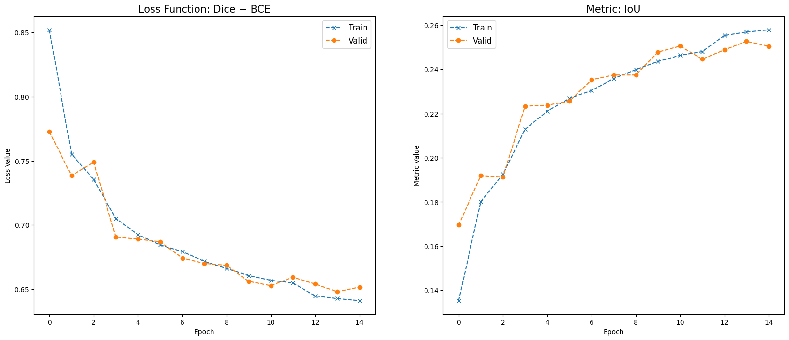
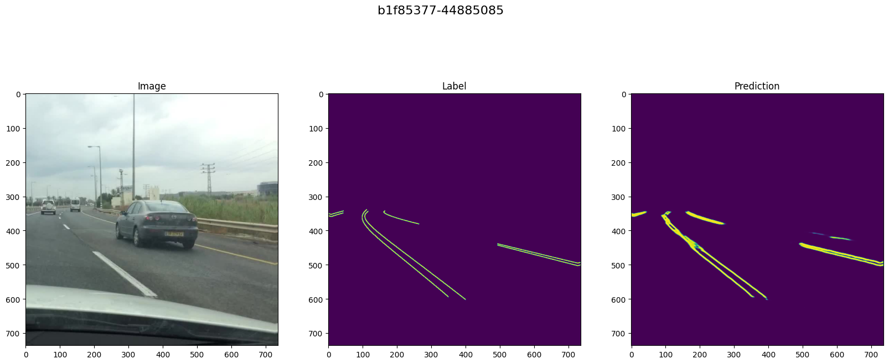
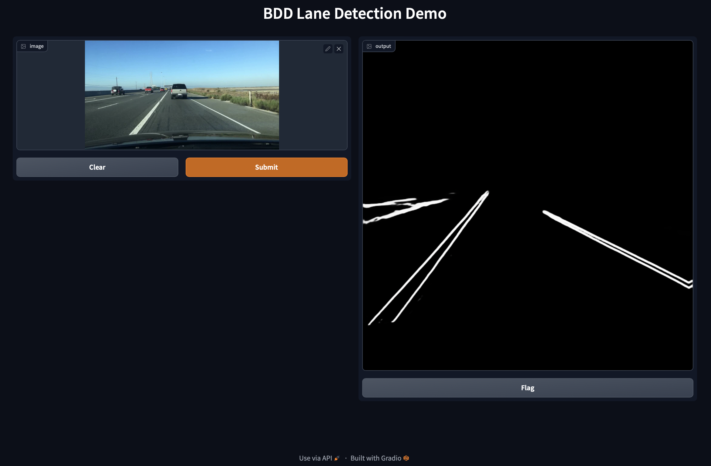

Overview
A ResNet34-backbone U-Net model for detecting lanes using ~3k images from the BDD100K dataset. Built with modern PyTorch practices for maintainability and performance.
Features
Configuration Management
- YAML-based configuration for easy parameter tuning
- Organized into data, model, training, and inference sections
Pipeline Architecture
- End-to-end training, evaluation, and inference
- Modular components with automatic data splitting
Training Improvements
- Checkpointing with optimizer state
- Early stopping and LR scheduling
Visualization Tools
- Training history and prediction overlays
- Gradio web interface for demos
Project Structure
├── config.yaml Configuration
├── main.py CLI interface
├── app.py Gradio web app
├── data/
│ ├── images/ Training & validation images
│ ├── labels/ Segmentation masks
│ └── model.pt Pretrained checkpoint
├── src/
│ ├── model.py U-Net architecture
│ ├── data.py Dataset classes
│ ├── train.py Training loop
│ ├── loss.py Dice+BCE loss
│ └── pipeline.py End-to-end pipeline
├── source/ Notebook compatibility
└── notebooks/ Jupyter experiments
Data and pretrained models available on Kaggle.
Notebooks
| Notebook | Description |
|---|---|
| 01-data | Dataset exploration and preprocessing |
| 02-transform | Augmentation experiments |
| 03-model | Model training |
| 04-evaluate | Performance evaluation |
Results
U-Net with ResNet-34 backbone trained using Dice + BCE loss, evaluated with IoU metric.
 Full analysis in the PDF report.
Usage
Training
python main.py --mode train --config config.yamlEvaluation
python main.py --mode evaluate --checkpoint checkpoints/model.ptPrediction
python main.py --mode predict --input image.jpg --output predictions/Web Demo
python app.pyAlso hosted on Hugging Face Spaces.
Requirements
torch ≥2.0
torchvision
numpy
pandas
opencv
albumentations
smp
gradio ≥4.0
matplotlib
pyyaml
pip install -r requirements.txt